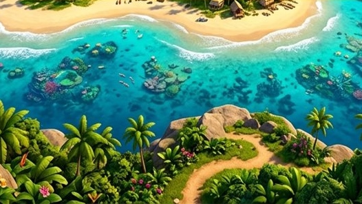
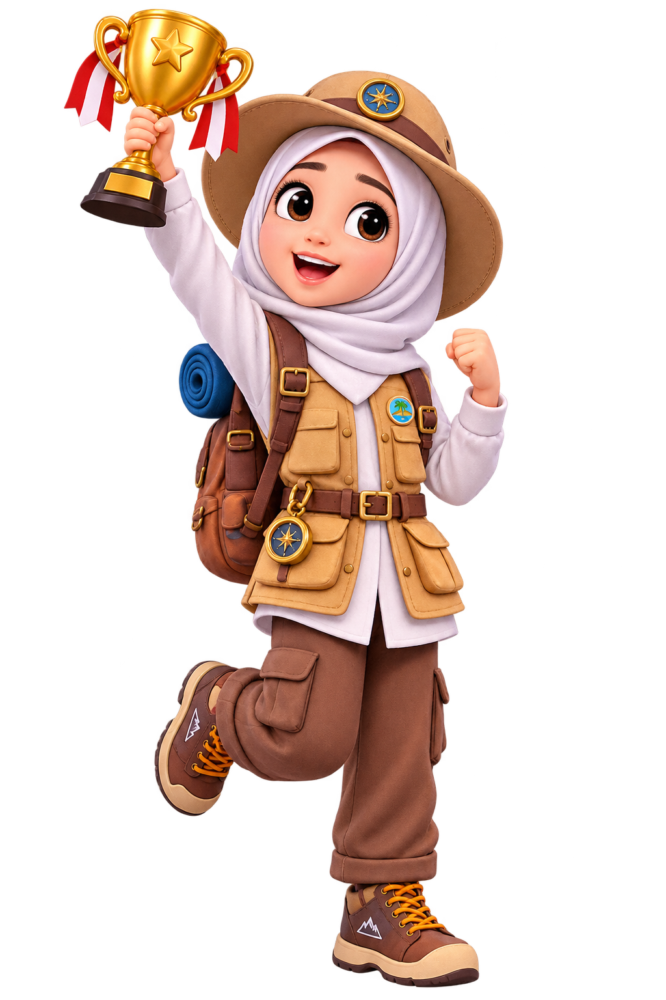

Pendaratan di Dermaga
Dengarkan narasi atau klik Lanjut Cerita!
Sebelum perahu kita berlayar, tuliskan nama panggilan hebatmu!

Diberikan dengan penuh kebanggaan kepada:

Setiap lencana adalah bukti penguasaan materi dan tekad beribadahmu.
Ilmu tentang puasa sunah bukan hanya untuk dihafal di sekolah, melainkan untuk diamalkan dengan ikhlas demi meraih kecintaan Allah Swt.
Penjelasan jawaban kuis.
Deskripsi pencapaian misi.
Cara Bermain:
Pendamping Petualang Kaka: